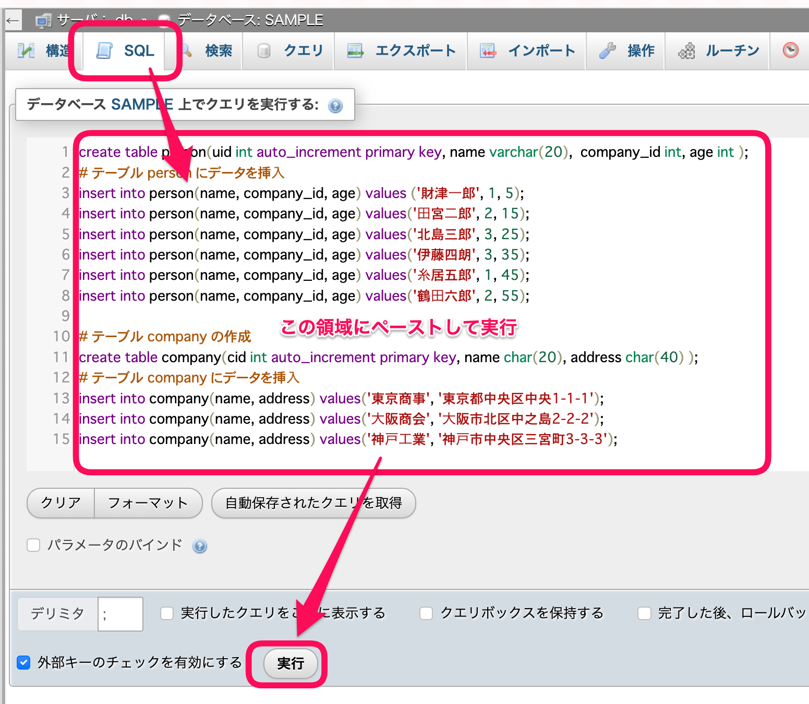

テーブルの作成について
テーブルの作成は、phpMyAdminのGUIでもそれほど問題無く行えると思いますが、手動で行うと細かいところで間違えてしまうことがあります。
GUIによる方法
データベース(今回はSAMPLE)選択すると、データベース一覧が確認できますが、初期状態ではなにもありません。
{kind=link}
ここで必要であればテーブル名とカラム数を設定してテーブルを作成することができます。
ここでは hoge テーブル、カラム数2で作成してみましょう。
{kind=link}
カラム数2で設定しているので、それぞれのカラムの設定を入れます。指定外の部分は無記入のままでかまいません。
第1カラム
名前:
idタイプ:
INTA_I: チェックを入れる(Auto Increment: 値の自動挿入)
インデックス:
PRIMARY(A_Iのチェックを入れると自動で切り替わります)
第2カラム
名前:
nameタイプ:
varchar長さ/値: 32
{kind=link}
これで「保存する」ボタンを押せばテーブルの作成が行われます。

あとは上部の挿入から値を入力できるので、実際に触って確かめてください。
SQLによる方法
あらかじめSQLのテキストが配布されている場合は、こちらを使うことで同じ状況を再現できます。 ここでは以下のテキストを利用しましょう。
create table person(uid int auto_increment primary key, name varchar(20), company_id int, age int );
# テーブル person にデータを挿⼊
insert into person(name, company_id, age) values ('財津⼀郎', 1, 5);
insert into person(name, company_id, age) values('⽥宮⼆郎', 2, 15);
insert into person(name, company_id, age) values('北島三郎', 3, 25);
insert into person(name, company_id, age) values('伊藤四朗', 3, 35);
insert into person(name, company_id, age) values('⽷居五郎', 1, 45);
insert into person(name, company_id, age) values('鶴⽥六郎', 2, 55);
# テーブル companies の作成
create table companies(cid int auto_increment primary key, name char(20), address char(40) );
# テーブル company にデータを挿⼊
insert into companies(name, address) values('東京商事', '東京都中央区中央1-1-1');
insert into companies(name, address) values('⼤阪商会', '⼤阪市北区中之島2-2-2');
insert into companies(name, address) values('神⼾⼯業', '神⼾市中央区三宮町3-3-3');
一度データベース名 SAMPLE を選択後、SQLを選択してください。
{kind=link}
上記テキストをコピーし、SQL記述用のテキストエリアに貼り付け(ペースト)してください。 貼り付け後実行することで、SQLに書かれた内容を評価して、テーブルと値の挿入が行われるはずです。
{kind=link}
今回のSQL文では、companiesとpeopleテーブルが追加されます。
それぞれのテーブルを確認すると、サンプルの値も挿入されていることも確認できます、操作してみましょう。
{kind=link}